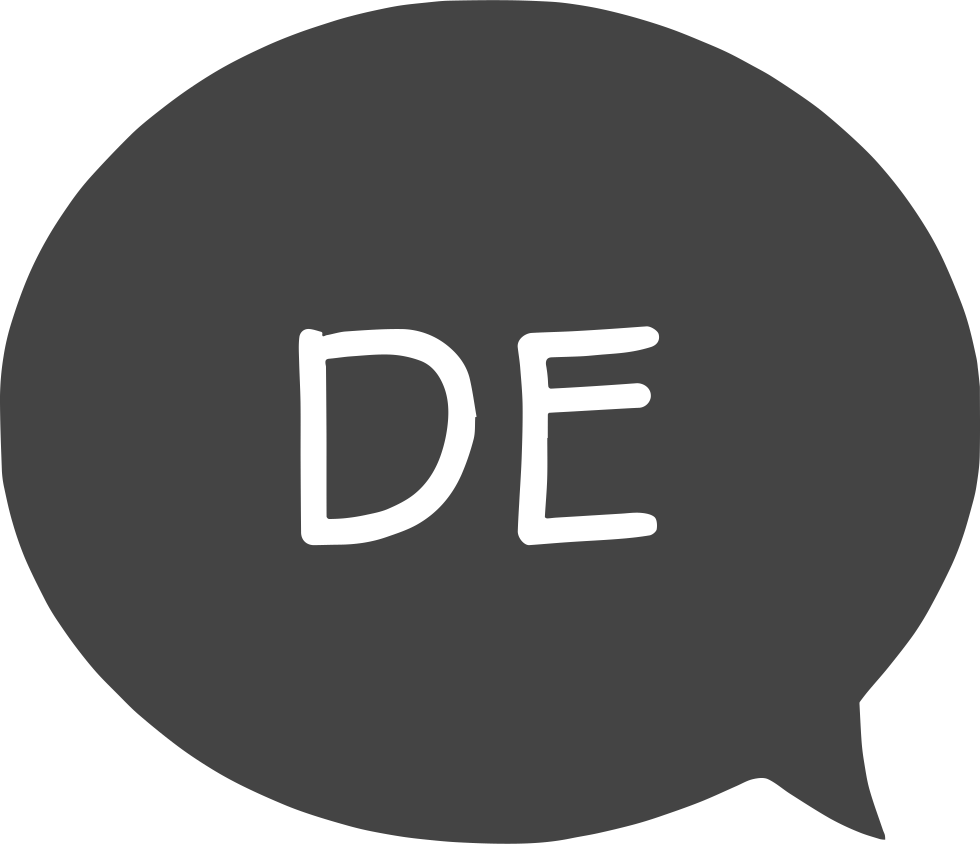
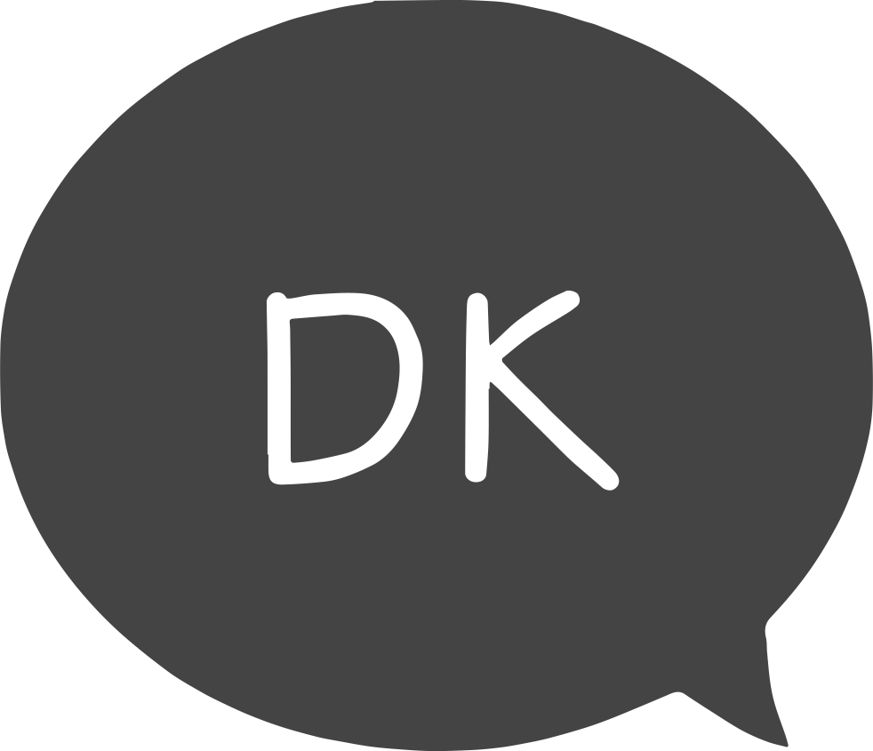

I strive to obtain insights at how products and concepts may enrich our lives through pleasant and sometimes playful experiences.
I am engineer, designer, developer. I like to tinker and spend lots of time in my workshop. I play the saxophone. I love my family.
I like calm walks through crisp and golden late-autumn woods. I am curious. I am quick to learn. I am a casual perfectionist with love for the detail.
I like to walk my own way in order to reach the unreached. Sometimes I get lost doing so. But hey, Columbus was not actually searching for America when he discovered it...
Languages


german (native)
english (fluent)
danish (beginner)
Education
1992
2012
2014
2019
2021
Explorer on Planet Earth
Flensburg, Germany
High School Graduate
Altes Gymnasium Flensburg, Germany
2-year voluntary service (of generations)
Seattle, Washington, USA
Bachelor of Engineering in Interaction Design
University of Southern Denmark, Sønderborg
Master of Science in IT Product Development
Aarhus University, Aarhus, Denmark
Experience
2012
Youth Gymnastics Trainer
2012 - 2014
Voluntary Service abroad
2015 - 2019
IT Specialist (studentjob)
2018
Product Designer (internship)
2019 - 2020
Marketing Assistant (studentjob)
2021 - now
IT Translator (freelancer)
Skills & Competencies
creative process
prototyping
ideation
research
usabilitystudies
engineering
mechanics
electronics
software
CAD
development
frontend
concept
backend
IoT
Creative Process
I like to follow an iterative design process that involves the
user as much as possible and consists of:
- thorough research of related work to the design topic
- action-packed ideation
- high fidelity and often rapid prototyping
- well-planned usability studies
Prototyping
Prototypes may vary between conceptual wireframes, low-fidelity
mockups, high-quality prototypes, and everything inbetween.
I build prototypes end-to-end:
- CAD models and simulations
- selection of materials
- programming of software (Arduino & Raspberry Pi)
- hardware assembly (mechanics & electronics)
Ideation
Finding problems, solutions and opportunities requires
more than just thinking. In my experience, cognition works
best when embodied.
That means: hands on, get crazy, think divergent,
and all of that as close to the user as possible.
Research
Good research avoids "reinventing the wheel". It may inspire,
direct and provoke the creative process. Research in:
- related work
- state-of-the-art
- associated value
- product life cycle analysis
Usability Studies
Usability studies provide the essential data for proving
or disproving hypothesis, justifying decisions, and confirming
or rejecting assumptions. Early on in the creative process they
may also:
- identify problems
- uncover opportunities
- provide insights over user's behavior & preferences
Engineering
Engineering is about problem-solving: creating a solution or removing the problem.
But there are not just problems in this world. There are also opportunities!
I believe in extraordinary engineering: solve the problem AND create additional value.
Mechanics
I have a good understanding of basic static & dynamic mechanics. It allows me
to ideate feasibly, design optimally and build functional prototypes.
Electronics
I strive to keep circuits as clean & simple as possible. I feel most
comfortable with low-voltage applications, but have also experience
with autonomous charging stations for e-ferries and high-voltage,
low-power applications such as fun shocking gloves.
Software
I love embedded systems combining smart sensors, well-programmed micro chips
and smooth actuators. I also enjoy develpoing exclusively digital software.
Computer-Aided Design
I use CAD in both 2D and 3D applications. I am well-experienced with:
- Adobe Illustrator & InDesign
- Autodesk Fusion360 & Inventor
- various other tools
Development
Too much of our vastly developing technology arises from the "just because I can" - mentality.
Though being somewhat nerdy myself, I strive to apply technologies sensibly and develop accordingly.
Frontend
I am proficient in HTML, CSS and JavaScript with a focus on pleasant UX and performant UI.
Concept
I am thoroughly schooled in developing and designing concepts and products – end-to-end,
iteratively and user-centered.
Backend
Originally learned C. I am also proficient in Node.js with some knowledge of Python.
Internet of Things
I know the IoT/WoT quite well and have the skillset to keep up with its
vastly changing and developing nature. I know about the power behind
systems such as AWS but I have a special interest in independent, lightweight
"homemade" solutions.